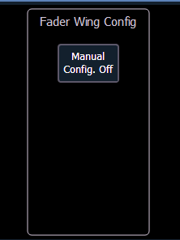
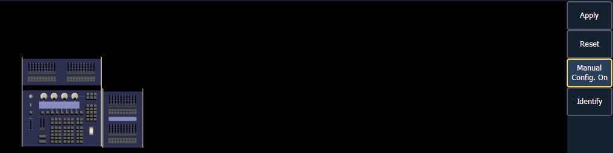
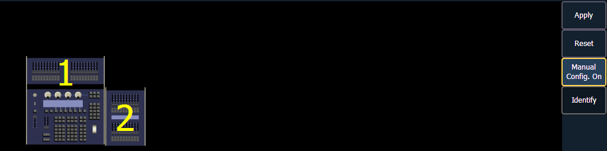

This screen allows you to manually configure the positions of fader wings connected to your console. The console will default to configuring the wings on its own. To manually configure, you must click on the {Manual Config. Off} softkey.

Clicking on the {Manual Config. Off} button turns manual configuration on and displays the Fader Wing Configuration screen.

Clicking{Identify} will display numbers on each wing’s display to aid in configuration. The numbers do not identify the wings as to their actual order. Order is determined from left to right. The left most wing will contain the first faders.

Click and drag the wings to match your physical layout. Click {Apply} to save the changes. Clicking {Reset} will restore to the last saved configuration. Clicking {Manual Config. On} will turn off manual configuration and will require a restart of the application before the console will automatically configure the wings. For more information on using fader wings, see .